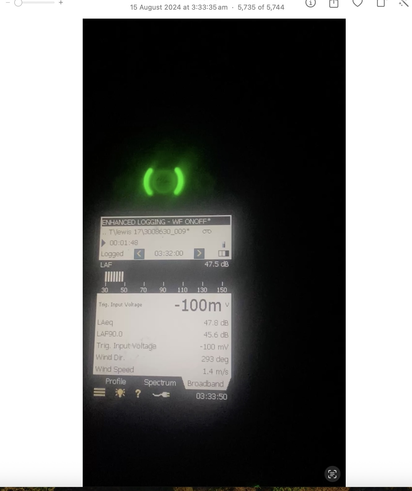
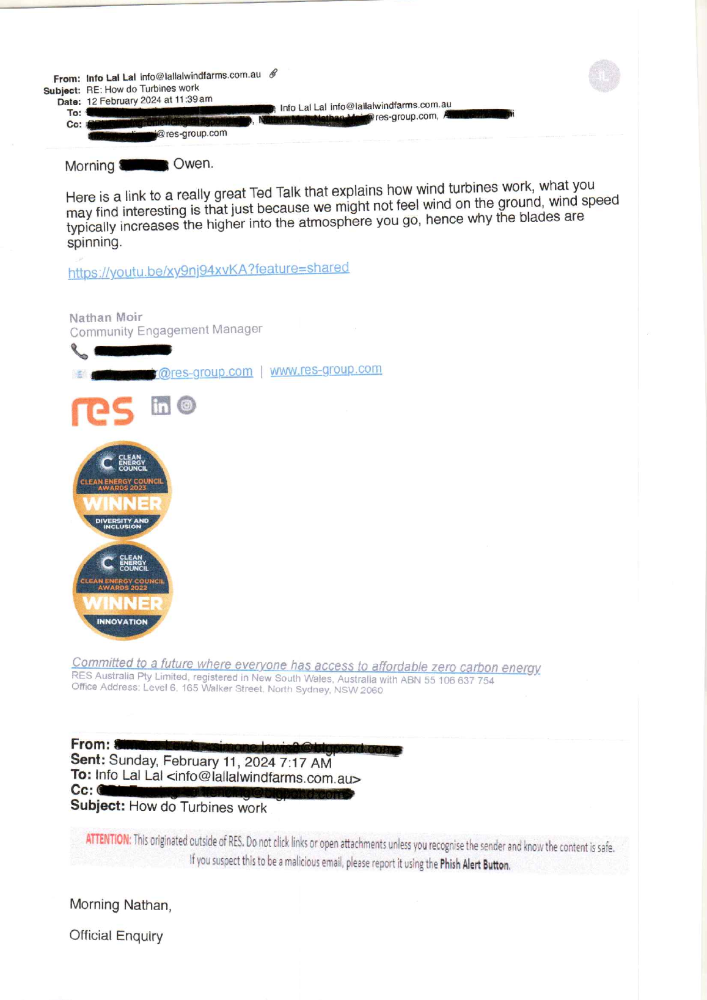
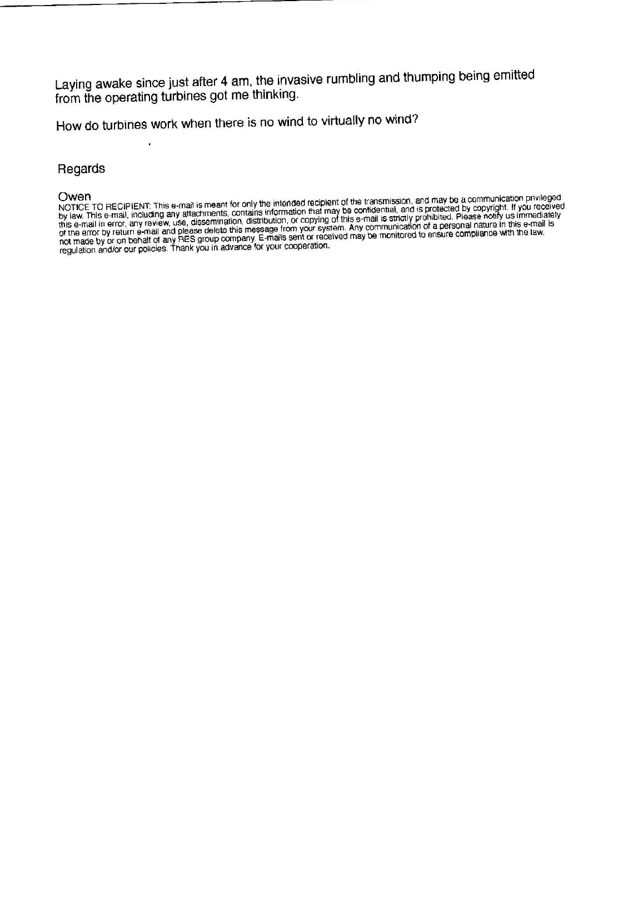
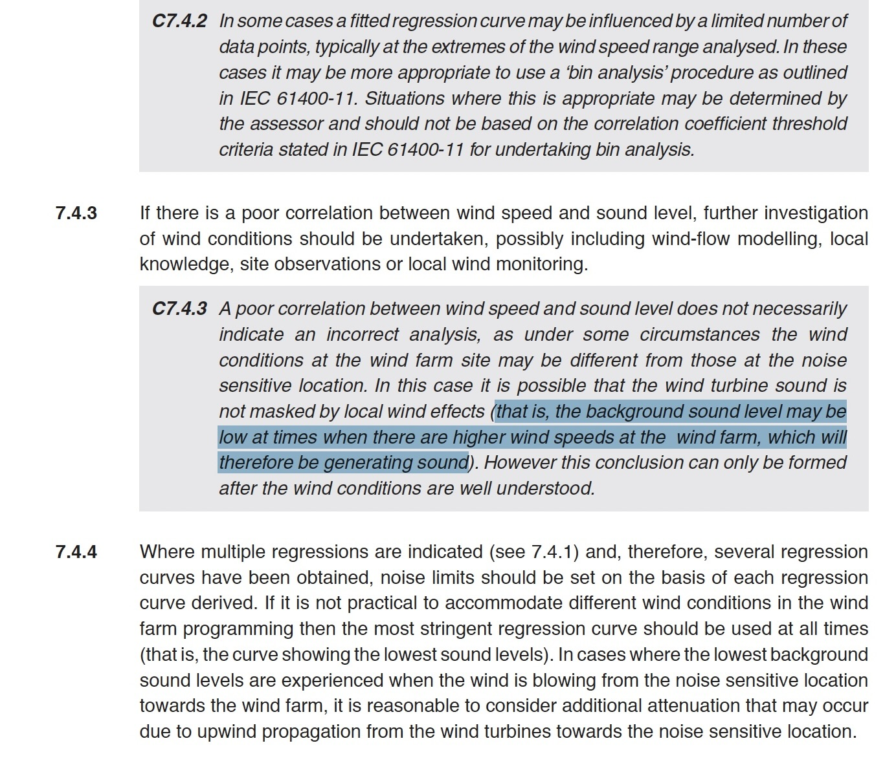
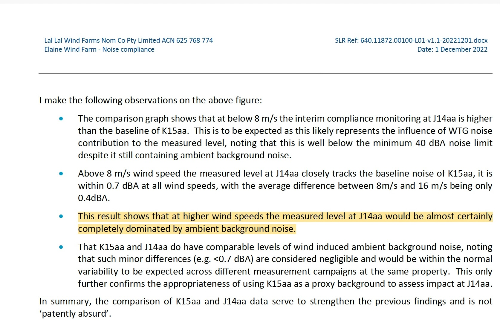

15 August 2024 — Noise Complaint and Monitoring Record
A focused documentary record of the early-morning complaint at J14aa, the contemporaneous SLR logger video and photograph, LLWF's later complaint response, and why the difference between local and wind-farm wind conditions matters under NZS 6808:2010 and the endorsed Noise Compliance Testing Plan.
What this page does — and does not do
This page places contemporaneous source material beside the relevant acoustic-report and approved-plan context. It does not convert a momentary logger display into a formal compliance finding, and it does not assume that the 9.5 m/s figure in LLWF's complaint response was a hub-height wind speed. The unresolved documentary question is narrower: was the actual SLR logger data from J14aa reviewed when the 15 August 2024 complaint was investigated, what wind-speed source was used, and how did those records inform the conclusion?
The SLR logger was already operating at J14aa
The Beneficiary had reported being woken in the early morning by turbine noise described in the contemporaneous complaint as “thumping and roaring”. SLR monitoring equipment was operating at the dwelling. The video and still photograph below capture the logger at slightly different moments.

9.5 m/s recorded in the investigation response
The later Lal Lal Wind Farm response to complaint LLWF-Ela-2395 records an average wind speed of 9.5 m/s and states: “Wind conditions would not have caused excessive noise. Will cont to monitor.”
The published response extract does not itself identify the measurement height or source of the 9.5 m/s figure. That distinction is material because the NCTP separately distinguishes 93 m reference wind speed from local 1.5 m wind measured near a receiver.

LLWF had already explained why wind at turbine height can differ from wind at the home
Several months before the 15 August 2024 event, the Beneficiary put a simple question to Lal Lal Wind Farm after experiencing turbine noise while there was little or virtually no wind at ground level:
“How do turbines work when there is no wind to virtually no wind?”


The correspondence is relevant here because it records LLWF itself recognising the physical distinction between wind conditions experienced at ground level and wind conditions available to the turbines at height.
The TED-Ed video is included here because it was the explanatory material LLWF chose to provide in response to the Beneficiary's question. It is not substituted for NZS 6808:2010 or the endorsed Noise Compliance Testing Plan, which remain the technical documents addressed below.
High wind at the wind farm does not automatically mean high wind noise at the home
NZS 6808:2010 deliberately references wind-farm sound measurements to wind speed at the wind farm, preferably at hub height. But the Standard also recognises that conditions at the wind farm can differ from conditions at the noise-sensitive location.
Put simply
It can be windy where the turbines operate while the background sound at the home remains low. In that situation, turbine sound may not be masked by local wind effects. NZS 6808:2010 C7.4.3 says that this possibility can arise and that the conclusion can only be formed after the wind conditions are well understood.

Local wind was required as a secondary reference
The endorsed Lal Lal Wind Farm Noise Compliance Testing Plan requires local wind speed at 1.5 m above ground level to be measured in synchronised ten-minute intervals at at least one receiver location during each stage. It states that local wind near the noise measurement system is to provide a secondary reference when reviewing the trends of the measured noise data.
The same NCTP expressly recognises that increased wind shear can result in lower background noise levels, and requires attended observations during conditions when increased wind shear could be expected. It also identifies suitable attended-observation conditions as approximately 5–10 m/s at turbine hub height, little or no rainfall, and times when background noise is expected to be lower.
The technical question
When higher hub-height wind speeds were associated with increasing measured sound, how was the separately measured local wind information used before attributing that sound to ambient or wind-related background noise?
The SLR reports reviewed for this record identify local wind measurements, but the presently published reports do not disclose a reported correlation analysis between local receiver wind speed and the 93 m / hub-height reference wind speed.
SLR's earlier interpretation at J14aa
This statement did not concern the 15 August 2024 complaint or logger event. It arose from an earlier J14aa interim monitoring campaign and is included here because it shows how SLR interpreted higher-wind measurements at the same receiver location.
SLR observed that above 8 m/s the earlier J14aa measured levels closely tracked the K15aa background regression. SLR then interpreted that similarity as showing that the measured level at J14aa was “almost certainly completely dominated by ambient background noise” and referred to K15aa and J14aa as having comparable levels of “wind induced ambient background noise.”

Why it is relevant here
The similarity of two regression lines establishes that their numerical sound levels were similar. It does not, by itself, identify what source produced the sound at J14aa. NZS 6808 and the NCTP expressly recognise that high wind at the wind farm can coexist with lower local background sound, particularly under wind-shear conditions.
The later J14aa record shows why that distinction matters
The 2024 event does not retrospectively prove or disprove SLR's 2022 interpretation. It is a separate contemporaneous example at J14aa in which the local logger record and LLWF's complaint-response wind figure were markedly different.
Low local wind shown across the contemporaneous video and still photograph.
Average wind speed recorded in the later investigation response; source and measurement height are not identified in the published extract.
The comparison does not assume that the two figures are measurements of the same thing. That is precisely the unresolved point: the source and height of the 9.5 m/s figure have not been identified in the published response.
Why the K15aa noise-limit table matters
SLR's March 2023 J14aa interim report records that previous baseline monitoring had not been undertaken at J14aa and that a separate J14aa noise limit had therefore not been established. SLR stated that the noise limit at the nearest receiver, K15aa, was likely appropriate for J14aa and that the J14aa interim assessment used the K15aa limits.
SLR's February 2021 K15aa baseline report derives the limits at integer hub-height wind speeds. For the night-time period, the table records a limit of 40.0 dBA at 9 m/s and 40.0 dBA at 10 m/s.

The question put to the operator
After receiving the operator's response, the Beneficiary expressly asked:
“Was the data from the noise logger reviews in the investigation into my complaint?”
On the presently published documentary record, the operator response does not identify the SLR logger data as having been reviewed, does not provide the relevant logger results and does not explain how those results informed the stated conclusion.
This does not establish that the logger data was not reviewed. It records that the presently published response does not show that it was.
What now requires reconciliation
The expanded record now contains four directly relevant strands of evidence:
Contemporaneous local conditions
The SLR logger video and still photograph show low local wind at J14aa during the reported 15 August 2024 disturbance.
Operator investigation
LLWF recorded an average wind speed of 9.5 m/s and concluded that wind conditions would not have caused excessive noise, without identifying the source or measurement height in the published extract.
NZS and NCTP context
NZS recognises that wind-farm and receiver conditions can differ. The NCTP requires local wind as a secondary reference when reviewing measured-noise trends and recognises lower background under increased wind shear.
Unanswered data question
The presently published record does not establish whether the underlying SLR data was examined in reaching the complaint-investigation conclusion or how the local wind information was used.
The unresolved documentary question
Was the underlying SLR monitoring data from J14aa examined before the complaint response was issued, and how were the local wind data and the 9.5 m/s wind figure used in reaching the conclusion?
If further documentary material is produced, including the time-synchronised logger data or the source of the 9.5 m/s figure, it can be incorporated into this continuing record.
Read the underlying record
Read this case study with the February 2024 LLWF wind-at-height correspondence, the original complaint correspondence, the contemporaneous logger material, the J14aa / K15aa representative-monitoring record, the K15aa baseline documentation, NZS 6808 and the endorsed NCTP.